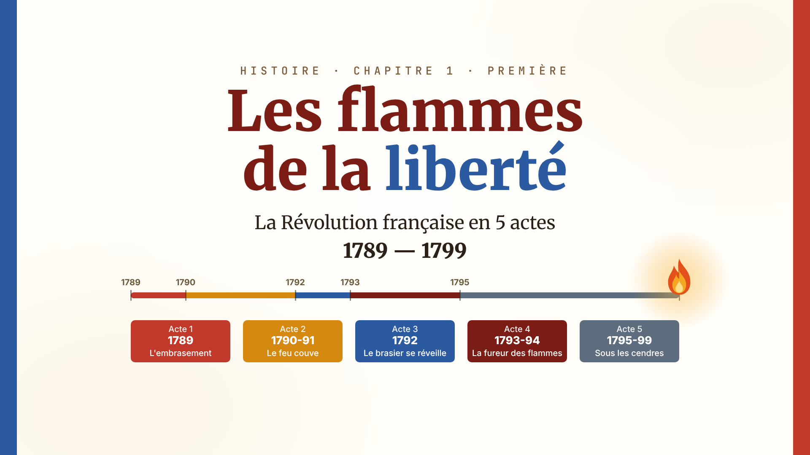
Paper ground with the cover's blue and red bands. A match strikes on « 1789 » ; the flame runs along the five-color frise to « 1799 », then the title « Les flammes de la liberté » and the five act chips land.
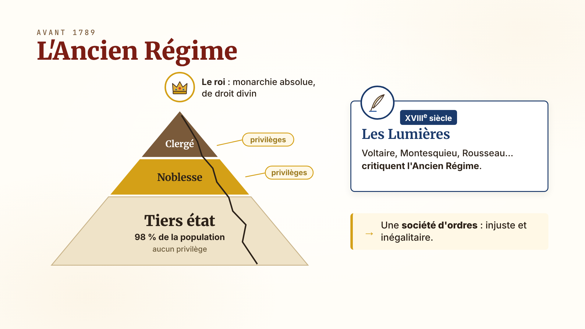
A crown above a three-tier pyramid: clergé and noblesse (small, gold « privilèges » tags) on top of a huge tiers état base. « Monarchie absolue · droit divin » under the crown; « Lumières : Voltaire, Montesquieu, Rousseau » arrives as a stamp that cracks the pyramid.
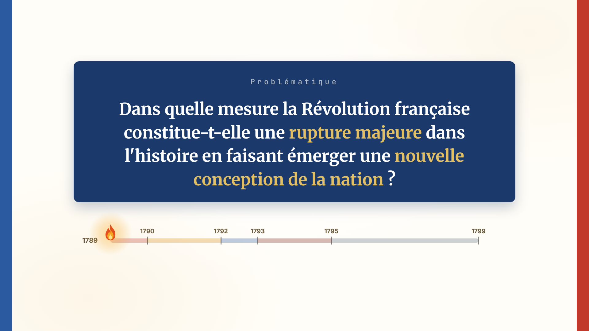
The navy problématique box of page 2, centered on paper; the key words « rupture majeure » and « nouvelle conception de la nation » light in gold. The match flame waits at the left end of the frise.
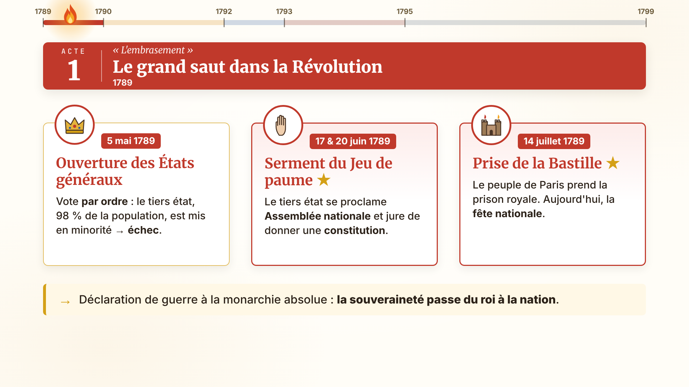
Red act banner « ACTE 1 · L'embrasement · Le grand saut dans la Révolution · 1789 », then the frise strip (acte 1 lit) with three event cards arriving left to right: 5 mai (États généraux → échec), 20 juin ★ (serment du Jeu de paume), 14 juillet ★ (prise de la Bastille). Arrow strip: « → La souveraineté passe du roi à la nation ».
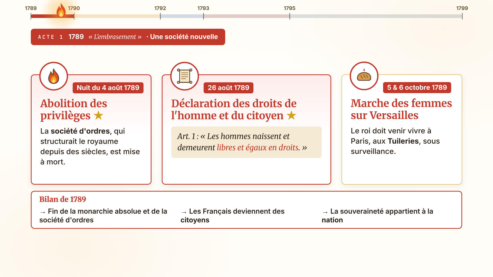
Same frise strip, the flame further right. Card 4 août ★ (abolition des privilèges — the pyramid of frame 2 collapses flat), card 26 août ★ (DDHC as a scroll with Art. 1 « Les hommes naissent et demeurent libres et égaux en droits »), card 5-6 octobre (marche des femmes → le roi aux Tuileries). Bilan strip: « Fin de la monarchie absolue · des citoyens · la souveraineté appartient à la nation ».
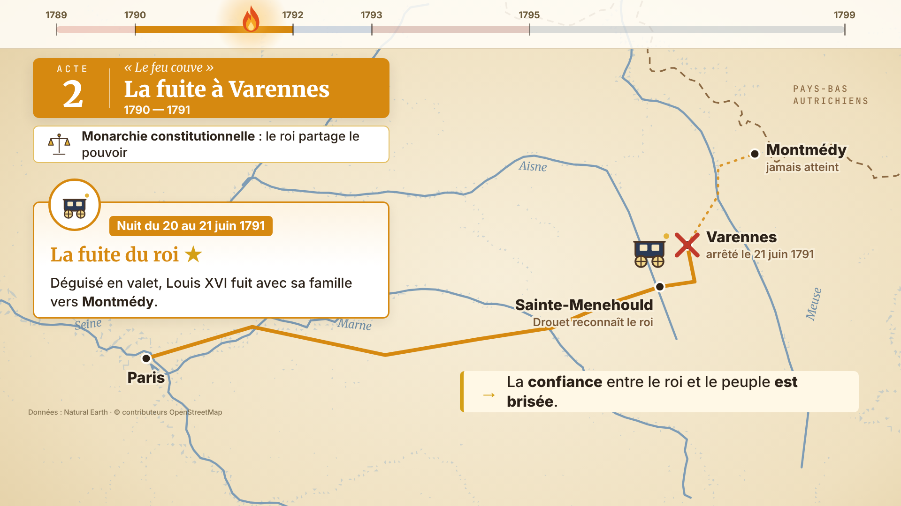
Orange banner « ACTE 2 · Le feu couve · 1790-1791 » then a real map aged like parchment: the carriage leaves Paris by night, passes Sainte-Menehould (Drouet recognizes the king), stops at Varennes (red cross); Montmédy stays out of reach, dashed. The carriage turns back to Paris. Closing strip: « → La confiance entre le roi et le peuple est brisée ».
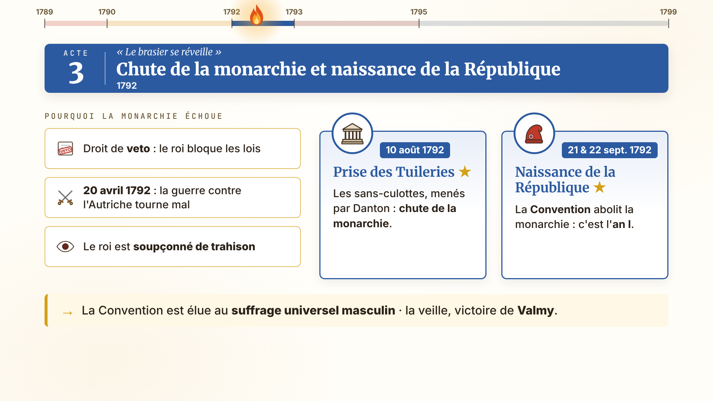
Blue banner « ACTE 3 · Le brasier se réveille · 1792 ». Three causes stack as tags (veto, guerre qui tourne mal, soupçon de trahison), then card 10 août ★ (prise des Tuileries → la couronne tombe) and card 21-22 septembre ★ (naissance de la République, an I) with the bonnet phrygien replacing the crown.
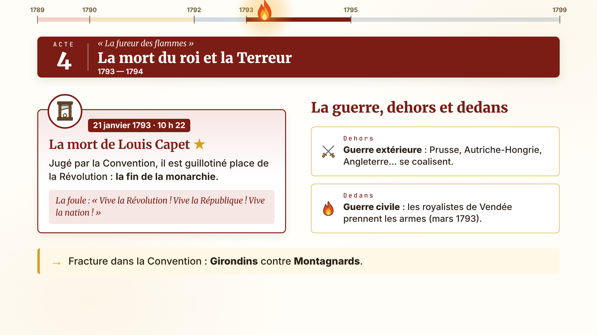
Bordeaux banner « ACTE 4 · La fureur des flammes · 1793-1794 ». Card 21 janvier 1793 ★ (Louis Capet guillotiné, guillotine icon, one hard cut to silence). Then two fronts open on a small Europe/France split: « guerre extérieure : coalition des monarchies » and « guerre civile : Vendée ».
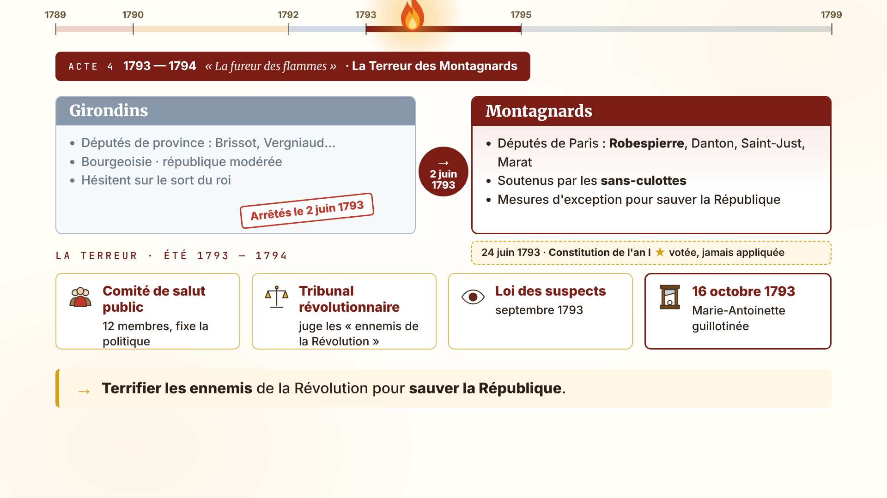
A two-column split from the PDF's table: Girondins (province, bourgeoisie, république modérée) dim out; Montagnards (Paris, sans-culottes, Robespierre) light up. Then the Terror's machinery assembles as three blocks: Comité de salut public (12 membres), tribunal révolutionnaire, loi des suspects. Small card 16 octobre 1793 : Marie-Antoinette guillotinée.
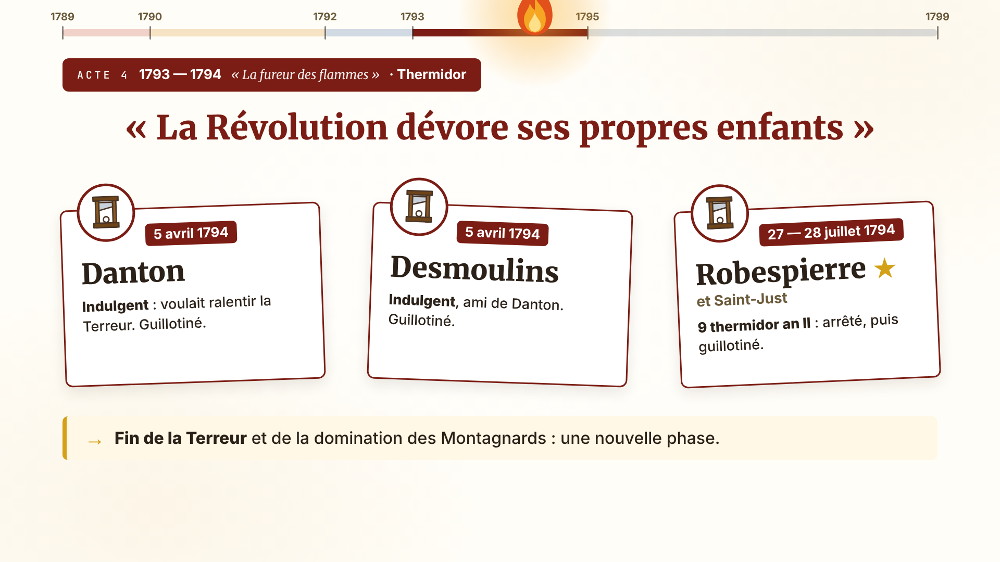
Quote card « La Révolution dévore ses propres enfants » ★. Portrait-less name plates Danton and Desmoulins (Indulgents) fall at 5 avril 1794; then Robespierre's plate falls at 27-28 juillet 1794 (9 thermidor an II ★). The flame, at its peak, collapses into embers.
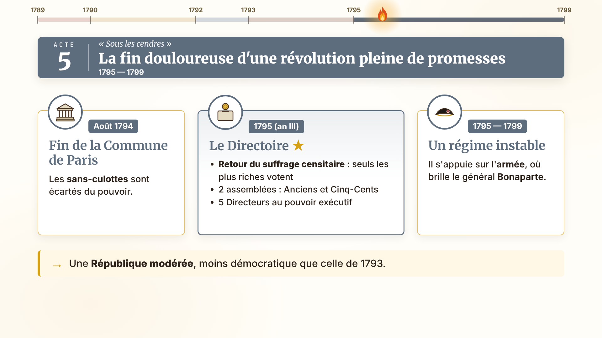
Slate banner « ACTE 5 · Sous les cendres · 1795-1799 ». The frise turns ash grey. Card 1795 ★ Directoire: « Retour du suffrage censitaire » (a ballot box that only accepts coins), « 2 assemblées : Anciens · Cinq-Cents », « 5 Directeurs ». Then a sword/army tag tips the balance toward « Bonaparte ».
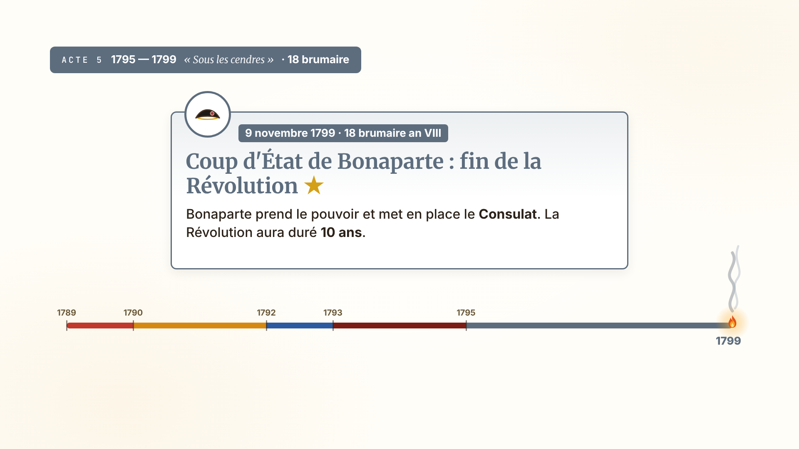
The bicorne icon in a slate medallion; card « 9 novembre 1799 · 18 brumaire an VIII ★ — Coup d'État de Bonaparte → le Consulat ». The flame on the frise goes out at 1799 in a curl of smoke.
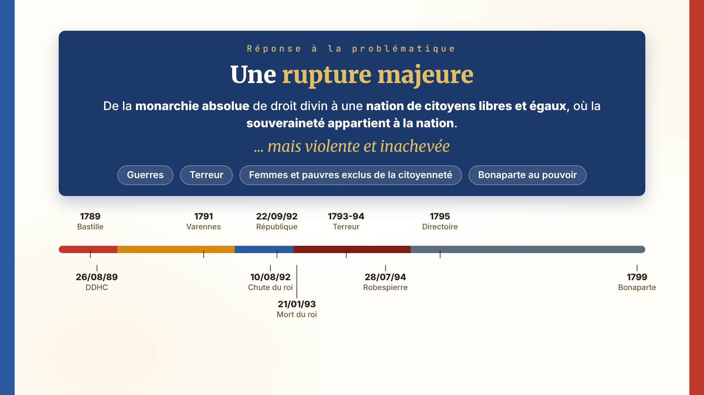
The whole five-color frise returns, every key date ticked (recap of page 12). Above it, the navy answer box: « Rupture majeure : de la monarchie absolue à une nation de citoyens libres et égaux » in white, then « … mais violente et inachevée » with four tags: guerres · Terreur · femmes et pauvres exclus · Bonaparte.
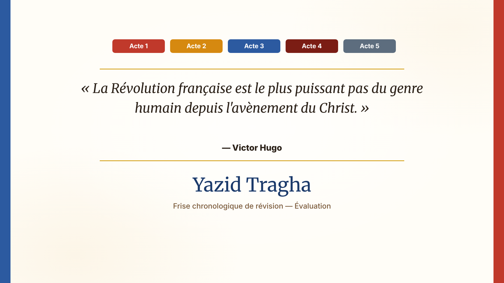
Cover layout returns (blue and red bands, gold rules): the Victor Hugo quote from page 1, then « Yazid Tragha — Frise chronologique de révision ». Silent, music resolves.